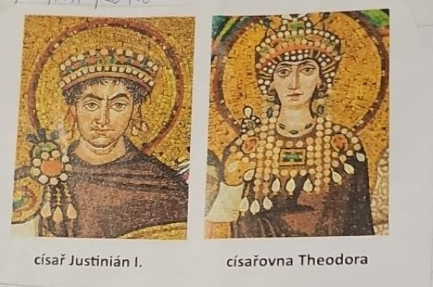
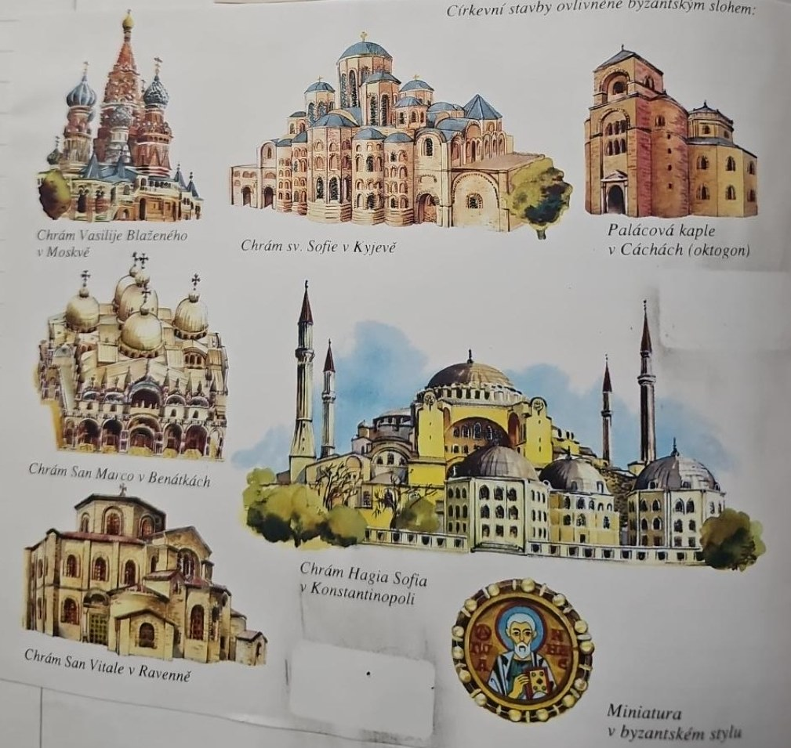
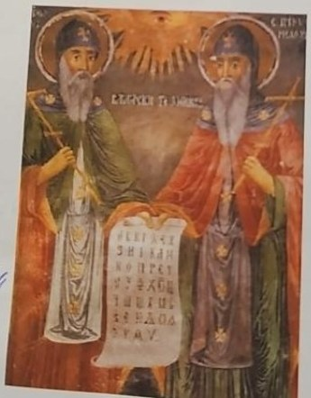
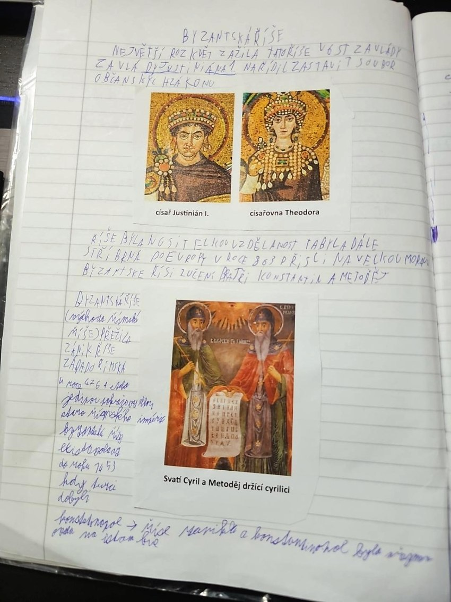
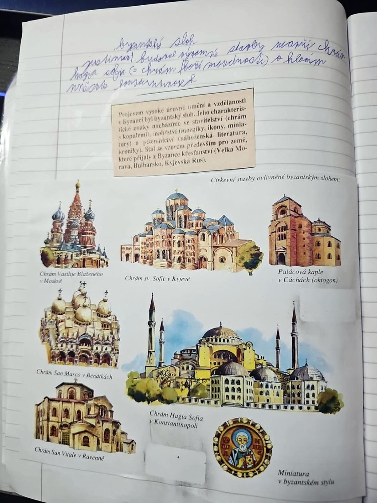

476–1453
Byzantská říše
Byzantská (Východořímská) říše přežila zánik Západořímské říše roku 476 a trvala až do roku 1453. Největší rozkvět zažila za Justiniána I. a z Byzance přišli na Velkou Moravu Konstantin a Metoděj.
Zvýrazněné je v sešitě podtržené.
- 476 Zánik Západořímské říše; východní, Byzantská říše pokračuje
- 863 Konstantin a Metoděj přicházejí na Velkou Moravu
- 1054 Velké schizma: rozkol západní a východní církvei v tématu Velké schizma – 1054
- 1453 Osmané dobývají Konstantinopol; konec Byzance
Pokračování římské říše
Byzantská říše (také Východořímská říše) přežila zánik Západořímské říše v roce 476. Stala se tak jedinou pokračovatelkou starořímského impéria. Hlavním městem byla Konstantinopol.
Proč je to důležité: na západě Římská říše zanikla, ale na východě její vzdělanost, zákony a umění pokračovaly dalších tisíc let.
Justinián I.

Největší rozkvět zažila tato říše v 6. století za vlády Justiniána I. Nařídil sestavit soubor občanských zákonů: dal dohromady staré římské zákony.
Proč je to důležité: díky tomu se římské právo zachovalo a evropské státy podle něj později tvořily vlastní zákony.
Byzantský sloh

Justinián budoval významné stavby, například chrám Hagia Sofia (= chrám Boží moudrosti) v hlavním městě Konstantinopoli.
Projevem vysoké úrovně umění a vzdělanosti v Byzanci byl byzantský sloh. Jeho znaky:
- stavitelství: chrámy s kopulemi,
- malířství: mozaiky, ikony, miniatury,
- písemnictví: náboženská literatura, kroniky.
Byzantský sloh se stal vzorem především pro země, které přijaly z Byzance křesťanství: Velká Morava, Bulharsko, Kyjevská Rus.
Církevní stavby ovlivněné byzantským slohem (obrázky v sešitě): chrám Vasilije Blaženého v Moskvě, chrám sv. Sofie v Kyjevě, palácová kaple v Cáchách (oktogon), chrám San Marco v Benátkách, chrám Hagia Sofia v Konstantinopoli, chrám San Vitale v Ravenně.
Konstantin a Metoděj

Říše byla nositelkou vzdělanosti a ta byla dále šířena po Evropě. V roce 863 přišli z Byzantské říše na Velkou Moravu učení bratři Konstantin a Metoděj.
Proč je to důležité: přinesli k nám vzdělanost a křesťanství ve slovanském jazyce, kterému lidé rozuměli.
Konec říše
Byzantská říše existovala do roku 1453, kdy Turci dobyli Konstantinopol. Říše zanikla a Konstantinopol byla přejmenována na Istanbul.
Souvislost: roku 1054 se církev v Konstantinopoli rozešla s Římem (téma Velké schizma).
Paměťový obraz
Byzanc je pravá věž hradu: začni u rozlomeného sloupu nahoře vlevo a pak jdi pravou věží zdola nahoru.

| Zastávka | Obraz | Co si vybavit |
|---|---|---|
| 1 | Rozlomený římský sloup | 476: Západořímská říše zaniká, východní pokračuje. |
| 7 | Kniha zákonů | Justinián: uspořádání římského práva v 6. století. |
| 8 | Kopule a mozaiky | Hagia Sofia: byzantské stavitelství a umění. |
| 9 | Kniha s hlaholicí | 863: Konstantin a Metoděj přicházejí na Velkou Moravu. |
| 10 | Brána Konstantinopole | 1453: Osmané město dobývají, Byzanc zaniká. |
Vyzkoušej se
Odpověz nahlas, teprve pak otevři odpověď. Procvičit náhodně
Jak se jinak říká Byzantské říši?
Východořímská říše.
Co se stalo roku 476 a co to znamenalo pro Byzanc?
Zanikla Západořímská říše; Byzanc přežila a stala se jedinou pokračovatelkou starořímského impéria.
Kdy zažila Byzanc největší rozkvět a za koho?
V 6. století za vlády Justiniána I.
Co nařídil sestavit Justinián I.?
Soubor občanských zákonů.
Proč je Justiniánův soubor zákonů důležitý?
Zachovalo se díky němu římské právo, podle kterého se později řídily evropské státy.
Jak se jmenuje Justiniánův slavný chrám a co jeho název znamená?
Hagia Sofia, chrám Boží moudrosti, v Konstantinopoli.
Jaké jsou znaky byzantského slohu?
Stavitelství: chrámy s kopulemi; malířství: mozaiky, ikony, miniatury; písemnictví: náboženská literatura, kroniky.
Pro které země se byzantský sloh stal vzorem?
Pro země, které přijaly z Byzance křesťanství: Velká Morava, Bulharsko, Kyjevská Rus.
Kdo přišel roku 863 z Byzance na Velkou Moravu?
Učení bratři Konstantin a Metoděj.
Kdy a jak zanikla Byzantská říše?
Roku 1453, kdy Turci dobyli Konstantinopol.
Jak se Konstantinopol jmenuje dnes?
Istanbul.
Jak se jmenovala císařovna, manželka Justiniána I.?
Theodora.
Zápis ze sešitu
Fotky stránek sešitu

